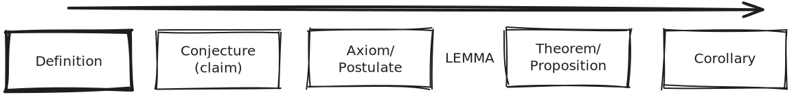

Logic#
1. Mathematical Logic (Discrete)#
Propositional logic#
Predicate logic#
Proof techniques#
Model theory#
Proof theory#
Computability theory#
Gödel’s incompleteness theorems#
2. Set Theory (Discrete)#
Sets and subsets#
Operations on sets#
Relations and functions#
Cardinality#
Ordinal numbers#
Axiom of choice#
Zermelo-Fraenkel set theory#
3. Math Foundation#
Introduction to Proof#

These are not set in stone. One usually starts with a definition. Then they make an unproven claim or conjecture. Axioms are meant to be minimal assumptions before building up. Lemmas are milestones as we work towards proving a theorem. Proof of a theorem is the primary goal. Corollaries are short proofs that rely heavily on the theorem.
A definition is an accurate description of a concept, which require no proof, and should be reversible.
“if a is define as b (a=b), then, if b, it must be a.”
“A sphere is the collection of all points some set distance from a fixed centre.”
An axiom is a statement that we accept without prove. Everything we prove must then be built off our axioms. The fewer the axioms the better(i.e. less assumption).
\(0\cdot a = 0\)
We use axioms to prove theorem. We can use our result to prove more Theorems. By doing this we accumulate the tools we have.
The Pythagorean Theorem
A lemma is a mini-theorem (small result) we might need to prove our main result.
Results that comes easily from a theorem are called corollaries
A trivial solution is an obvious solution
Find all [integer](diophantine equation) a, b, c such that \(a^n + b^n = c^n\) Then a, b, c = 0 is a trivial solution.
Euclidean Geometry / Plane Geometry#
Euclid only use 5 axioms to derive everything in geometry.
A line segment may be drawn between any two points.
A straight line may be extended infitely.
A circle may be drawn with any center and any radius.
All right angles have equal measure.
Given a line that interseects two other lines, if the angle made by those two lines with the first line add up to less than \(180\degree\) on thee same side, then those two lines must eventually meet on that side of the first line. This is also known as The Parallel Postulate.

The 5th axioms creates problems for many mathematician. Many have tried to use the first four axioms to prove the 5th but nobody could. It turns out that this postulate is only true for a geometry on a plane.
A similiar axiom to the parallel Postulate is the Playfair’s Axiom. “Given a line and a point not on that line, exactly one line can be drawn through that point that will be parallel to the first line.”
Non-Euclidean Geometry#
We start by assuming that Euclid’s 5th postulate is false, then work on it. This lead to finding Hyperbolic Geometry or Eliptical Geometry
Can a set of axioms proof every other theorem without using new axioms?#
There was a time where Mathematics is facing a foudnation crisis. David Hilbert proof that a finite set of axioms can’t